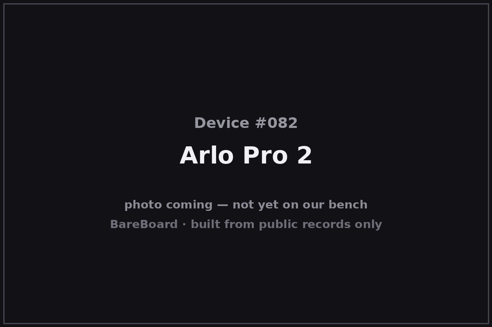

The Autopsy Report · Device #082
Arlo Pro 2
The Arlo Pro 2 is NETGEAR's second-generation wire-free security camera — the last Arlo built under the NETGEAR name before the company spun the brand out on its own. It promised 1080p, a rechargeable battery, and the choice to run wire-free or plugged in, and it sold the public on a simple pitch: a camera with no wires and, for a brief golden era, free cloud clips.
What is this thing?
The Arlo Pro 2 is a wire-free indoor/outdoor security camera sold by NETGEAR under its Arlo brand, model number VMC4030P. It records in 1080p HD and can run on its rechargeable battery or plugged into AC power. 9to5Toys
It was the flagship of the Arlo line when it launched in late 2017, and it became quietly famous for one policy: NETGEAR offered free rolling 7-day cloud storage of motion-triggered clips, a generosity later generations withdrew. Tom's Guide
Whose box is this?
This one isn't on our bench — yet. Nothing here comes from a BareBoard teardown: no disassembly, no boot logs, no bench measurements, no firmware in our hands. Everything below is built from public records — the government's FCC filing, the manufacturer's own documents, and contemporary press — read carefully and cited line by line. That's the deal with these reports: when a fact can't be verified from a public record, we say so, out loud.
The moment this hardware crosses our bench, this report gets a second act: our own photos, our own measurements, and anything the public record got wrong gets corrected.
A short history
The Arlo brand began as a NETGEAR product line. On October 10, 2017, NETGEAR announced the Arlo Pro 2 as the successor to the original Arlo Pro, bringing 1080p resolution, a rechargeable battery, and the ability to run on battery or AC. Android Police
The company behind it soon changed shape: in 2018, NETGEAR and Arlo announced the closing of Arlo's initial public offering, spinning Arlo off as an independent company. Arlo investor relations The Pro 2 was the last Arlo camera introduced under NETGEAR ownership — and the last to carry the free 7-day cloud storage plan. Tom's Guide
The outside

The Pro 2 is a small, white, pill-shaped camera on a magnetic ball mount — the Arlo look that persisted for years. Contemporary reviews describe it as weather-resistant and compact enough to mount indoors or out. Tom's Guide The front face carries the lens, an IR array for night vision, and a motion sensor; the rear holds the magnetic mount cup and a micro-USB charging port.
Reading the plastic
Mold marks, date wheels, material codes — the shell's birth certificate. This is bench-only evidence: without the physical unit in our hands, there's nothing honest to read here. What the enclosure looks like is described above from public photos; what's molded into it awaits the bench.
The board
No public internal-photograph exhibit for this exact model has been verified in open research. The FCC filing (ID 2APLE18300431, grantee Arlo Technologies, Inc.) fccid.io filing exists in the public record, but its internal photos could not be confirmed from accessible sources, so we won't pretend to describe the board layout. The radio architecture is standard for the class: a 2.4 GHz Wi-Fi radio talking to the Arlo base station, plus whatever sub-GHz link the proprietary base-station protocol uses — the exact chipset awaits the bench.
Under the microscope: the chips
Unknown. No verified chip list exists for the VMC4030P in public records we've been able to reach — no legible board photographs, no bill of materials, no public teardown with component markings. Anything we named here would be a guess, and guesses are the one thing an autopsy must never contain. This section is waiting for a donor unit.
The government's file on this box
The FCC equipment authorization for this device is FCC ID 2APLE18300431, grantee Arlo Technologies, Inc. fccid.io filing The filing is part of the public record; note that some third-party mirrors re-uploaded portions of it in 2025 with a new U.S. agent attestation, which is a paperwork update, not a new authorization — the original filing belongs to the 2017 product.
Listening in
We have no boot log for this device — no unit on the bench means nothing to listen to. But the posture is worth stating up front, because it governs everything BareBoard ever does with a live device.
We listen, we don't knock. A serial console is a place to watch a device narrate its own startup, not a place to log in, change things, or break past anything the manufacturer locked. On our bench we attach read-only: power and ground, one receive wire, and silence on the transmit line. We never use JTAG or SWD debug headers to take control, never extract or modify firmware, never hunt for credentials, and never publish anything that would let someone else bypass a lock or defeat authentication.
When this device arrives, the first question will be: where does it talk, and does it talk to us unprompted? Until then, that question stays open.
What we found
- The Arlo Pro 2 was NETGEAR's last Arlo camera before the 2018 spin-off that made Arlo an independent company.
- It recorded in 1080p and could run on battery or AC power.
- Its free 7-day rolling cloud storage made it the most owner-friendly Arlo — and the last one of its kind.
- The hardware internals remain undocumented in public records; a donor unit would unlock this whole report.
What we didn't do
- We never opened a unit, attached to a debug port, or powered one up for this report.
- We never extracted, modified, or shared any firmware or software.
- We never published or used any credentials, keys, or bypass techniques.
- No boot logs, no bench measurements, and no photos of our own — because there is no unit of ours to photograph. The device photo above is credited in its caption.
By the numbers
- Launch: October 10, 2017
- Model: VMC4030P
- Resolution: 1080p HD
- Power: Rechargeable battery or AC
- Company: NETGEAR (Arlo brand); spun off as Arlo Technologies, Inc. in 2018
- FCC ID: 2APLE18300431
- Bench status: Not yet on our bench
Words to know
- Wire-free
- Battery-powered with a wireless link — no cable to a wall outlet or a recorder.
- FCC ID
- The identifier the U.S. Federal Communications Commission assigns to authorized radio equipment; the filing is public.
- Cloud storage
- Recordings kept on the vendor's servers rather than on a local device.
Sources & confidence
- NETGEAR announces Arlo Pro 2 (1080p, wired/wireless modes) — Android Police, Oct 2017 link — Confirmed
- Arlo Pro 2 announcement — 9to5Toys, Oct 2017 link — Confirmed
- NETGEAR and Arlo announce closing of IPO — Arlo investor relations, 2018 link — Confirmed
- Arlo Pro 2 review (7-day free cloud storage detail) — Tom's Guide link — Likely
- FCC filing 2APLE18300431 (grantee: Arlo Technologies, Inc.) — fccid.io link — Confirmed
- Internal hardware (board layout, chip list) — no verified public exhibit found — Unknown
Legal note. BareBoard is an educational project. Everything on this page is derived from public records — our own bench work begins only when hardware arrives. We don't publish, host, or distribute firmware, keys, passwords, or credentials, and nothing here bypasses a lock, defeats authentication, or extracts software from a device. Product names and trademarks belong to their respective owners and appear here only to identify the hardware. If you believe anything here infringes your rights, contact us and we'll address it promptly.